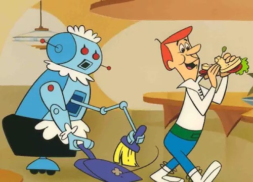
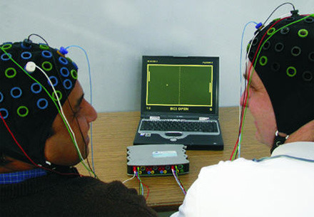

TBD
TBD
I love doing research on interfaces. There's nothing like imagining an entirely new way of interacting with a computer, creating it, and then showing it to the world. But if the inventions researchers like myself create never impact the interfaces we all use every day, what's the point? The answer, of course, is more complex than just a binary notion of an invention's impact.
First, much of what you've read about in this book has already impacted other researchers. This type of research impact is critical: it shapes what other inventors think is possible, provides them with new ideas to pursue, and can sometimes catalyze entirely new genres. Think back, for example, to Vannevar Bush's Memex. No one actually made a Memex as described, nor did they need to; instead, other inventors selected some of their favorite ideas from his vision, combined them with other ideas, and manifested them in entirely unexpected ways. The result was more than just more research ideas, but eventually products and entire networks of computers that have begun to reshape society.
How then, do research ideas indirectly lead to impact? Based on both the experience of HCI researchers and practitioners attempting to translate research into practice (Colusso et al. 2019) and historical records of interface innovation, there are three essential milestones that must occur (at least in a capitalist economy):
Let's consider four examples of interface technologies where these three things either did or didn't happen, and that determined whether the idea made it to market.
The first example we'll consider is what's typically known as strong AI. This is the idea of a machine that exhibits behavior that is at least, if not more skillful than human behavior. This is the kind of AI portrayed in many science fiction movies, usually where the AI either takes over humanity (e.g., The Terminator), or plays a significant role in human society (e.g., Rosie the robot maid in the Jetsons). These kinds of robots, in a sense, are an interface: we portray interacting with them, giving them commands, and utilizing their output. The problem of course, is that strong AI isn't (yet) feasible. No researchers have demonstrated any form of strong AI. All AI to date has been weak AI, capable of functioning in only narrow ways after significant human effort to gather data to train the AI. Because strong AI is not feasible in the lab, there aren't likely to be any entreprenurs willing to take the risk of bringing something to market at scale.
That example was fairly obvious of course; something that doesn't work clearly isn't going to be transferred into practice. But what about something that is feasible based on research? Consider, for example, brain-computer interfaces, which have a reasonable body of evidence behind them. We know that, for example, it's feasible to detect muscular activity with non-invasive sensors and that we can classify a large range of behaviors based on this. The key point that many researchers fail to recognize is that such evidence of feasibility is necessary but insufficient to motivate a business risk. To bring brain-computer interfaces to market, one needs a plan for who will pay for that technology and why. Will it be a popular game or gaming platform that causes people to buy? A context where hands-free, voice-free input is essential and valuable? Or perhaps someone will bet on creating a platform on which millions of application designers might experiment, searching for that killer app? Whatever happens, it will be a market opportunity that pulls research innovations from the archives of digital libraries and researcher's heads into the product plans of an organization.
Of course, just because someone sees an opportunity doesn't mean that there actually is one, or that it will still exist by the time a product is released. Consider, for example, Google Glass, which was based on decades of augmented reality HCI research, led by Georgia Tech researcher Thad Starner. Starner eventually joined Google, where he was put in charge of designing and deploying Googlge Glass. The vision was real, the product was real, and some people bought them (for $1,500). The release was more of a beta in terms of functionality. People weren't ready to constantly say "OK, Glass" every time they wanted it to do something. And the public was definitely not ready for people wandering around with a recording device on their face. The knickname "Glasshole" was coined, and suddenly, the cost of wearing the device wasn't just financial, but social. Google left the market in 2015, largely because there wasn't a market to sell to (yet, or possibly ever).
Voice assistants: research feasibility, Apple took the risk, found a market.
What are the implications of these stories for someone in innovating in industry? The criteria is pretty clear, even if the strategies for success aren't. First, if an interface idea hasn't been rigorously tested in research, building a product (or even a company) out of the idea is very risky. That puts a product team or company in the position of essentially doing research, and as we know, research doesn't always work out. Some companies (e.g., Waymo), decide to take on these high risks, but they often do so with the high expectation of failure. Few companies can do that.
Even when an idea is great and we know it works, there's a really critical phase in which someone has to learn about the idea, see an opportunity, and take a leap to invest in it. Who's job is it to ensure that entrepreners and companies learn about research ideas? Should researchers be obligated to market their ideas to companies? If so, how should researchers get their attention? Should product designers be obligated to visit academic conferences, read academic journals, or read books like this? Why should they, when the return on investment is so low? In other disciplines such as medicine, there are people who practice what's called translational medicine, in which researchers take basic medical discoveries and try to find product opportunities for them. These roles are often funded by governemnts, which view their role as investing in things markets cannot risk doing. Perhaps computing should have the same roles and government investment.
Finally, and perhaps most importantly, even when there are real opportunities for improving products through new interface ideas, the timing in the world has to be right. People may view the benefit of learning a new interface as too low relative to the cost of learning. There may be other products that have better marketing, or that have found ways of locking customers in. These market factors have nothing to do with the merits of an idea, but the particular structure of a marketplace at a particular time.
The result of these three factors is that the gap between research and practice is quite wide. We shouldn't be surprised that innovations from academia can take decades to make it to market, if ever. If you're reading this book, consider your role in mining research for innovations and bringing them to products. Are you in a position to take a risk on bringing a research innovation to the world? If not, who is?
Lucas Colusso, Ridley Jones, Sean A. Munson, and Gary Hsieh (2019). A Translational Science Model for HCI. ACM SIGCHI Conference on Human Factors in Computing, to appear.